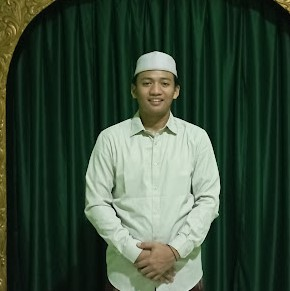
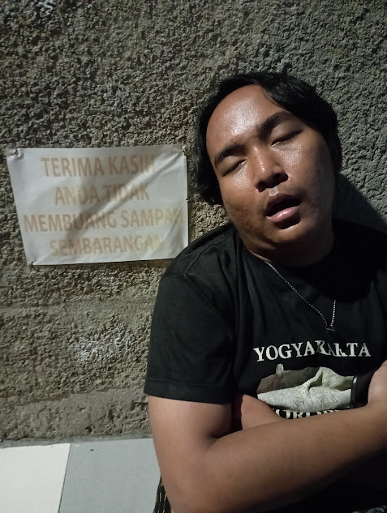

Apa Kata Mereka?

Hafidz Hanafi
"Sejak mengikuti majlis Burdah, kecintaan saya kepada Rasulullah semakin bertambah. Penjelasan Ustadz sangat mudah dipahami dan menyentuh hati."

Sito
"Pengajian Burdah ini sangat berbeda dengan pengajian biasa. Kita diajak untuk benar-benar menghayati setiap bait syair dan mengambil pelajaran darinya."

Arif Wijaksono
"Suasana majlis yang khusyuk membuat saya betah berlama-lama. Kini setiap Jum'at malam selalu saya nantikan untuk hadir di majlis ini."